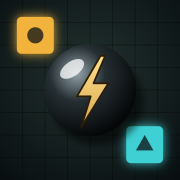

Donnerkugel
Datenschutz & Support
Kurz gesagt
Donnerkugel sammelt keine persönlichen Daten. Es gibt keine Werbung, kein Tracking, keine Analyse-Werkzeuge und kein Benutzerkonto.
Was auf deinem Gerät bleibt
Dein Spielfortschritt (freigeschaltete Level, Bestzeiten) und deine Einstellungen (Steuerung, Ton) werden nur lokal auf deinem Gerät gespeichert. Sie werden nirgendwohin übertragen. Wenn du die App löschst, sind diese Daten weg.
Bewegungssensoren
Die App nutzt die Neigung deines Geräts, um die Kugel zu steuern. Die Sensordaten werden nur während des Spiels verwendet und weder gespeichert noch übertragen.
Internet
Das Spiel funktioniert ohne Internetverbindung. Die App selbst sendet keine Daten an Server.
Support
Fragen, Fehler oder Ideen für neue Level? Melde dich über GitHub.
Privacy in English
Donnerkugel does not collect any personal data. No ads, no tracking, no analytics, no accounts. Game progress and settings are stored only on your device. Motion sensor data is used only to steer the ball during play and is never stored or transmitted.
Stand: November 2026